来源：https://cbwtkywz24.feishu.cn/docx/QlF8dCdrTorAFTxsSf8c3sGTnMh
Hi大家好，我是Lucia，今天分享主题是 ：
小红书1万阅读，千赞，赚6k，上班族是如何做到的
主要是分享以下内容
1，发现案例：无意中看看生财风向标，一个号一夜涨粉1万
2，拆解案例：这个号的变现逻辑是这样的
3，实操细节：引流违规了怎么办
4，经验分享：巧用工具事半功倍
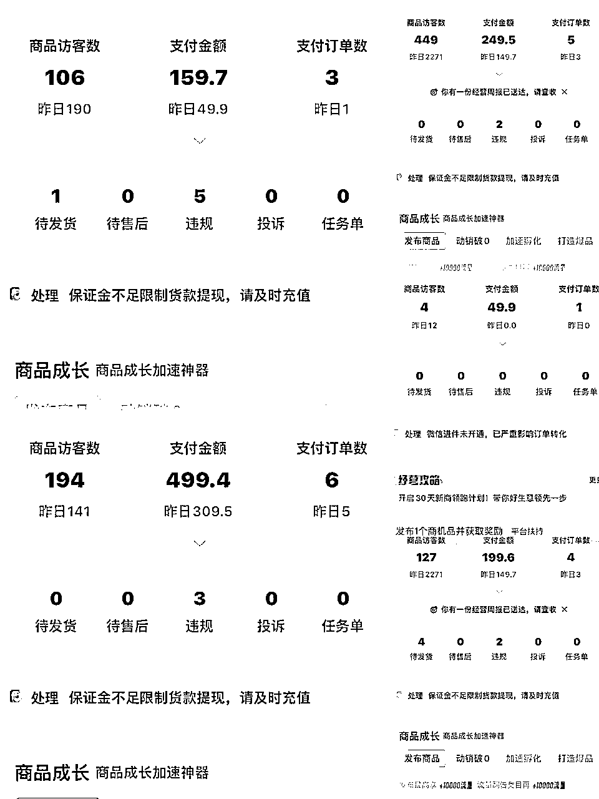
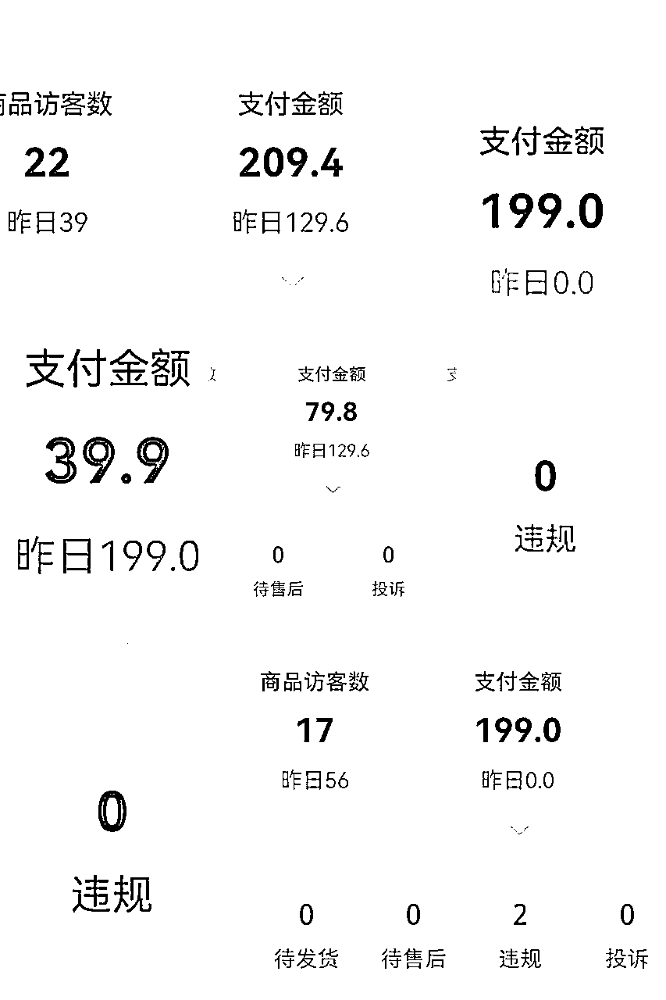
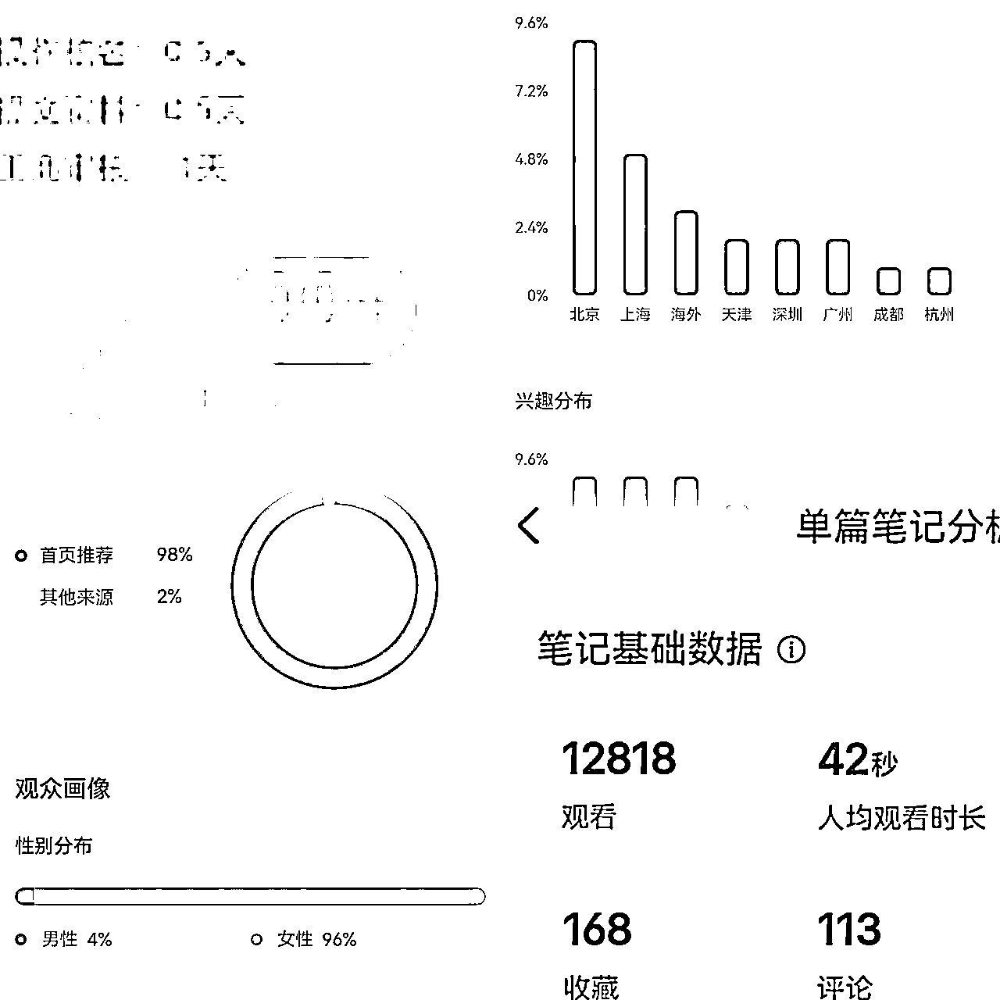
“刚开始接触小红书虚拟资料的时候，是怎么确定要做哪个类目的呀？”很多朋友问过我这个问题
其实纯属偶然，当时是看生财的风向标，小红书一个号，一夜之间涨粉1万，引发好奇，就去拆解了，附上我的拆解作业
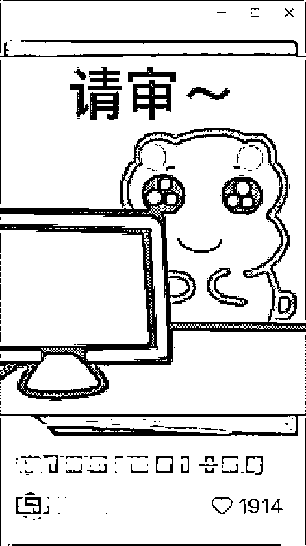
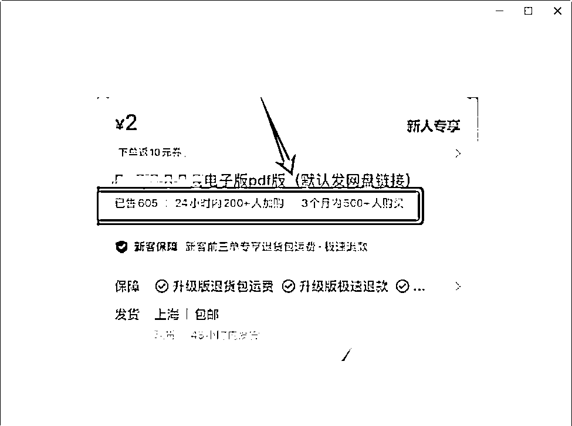
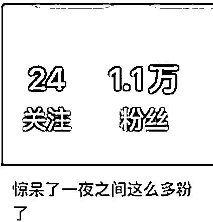
那个号最开始没有明确定位，前几天因为晒了一份资料，一天涨粉1万。那说明什么？
一定要意识到：低粉大爆款，值得马上抄作业
给资料拍照，每天发5篇图文笔记，用爆款笔记内容涨粉引流，然后引导成交——
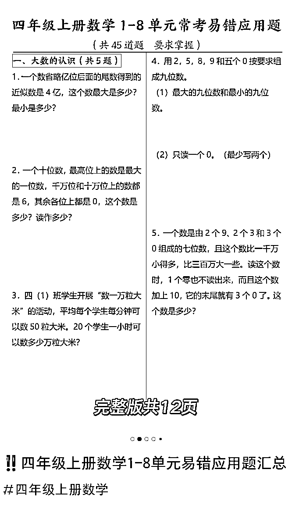
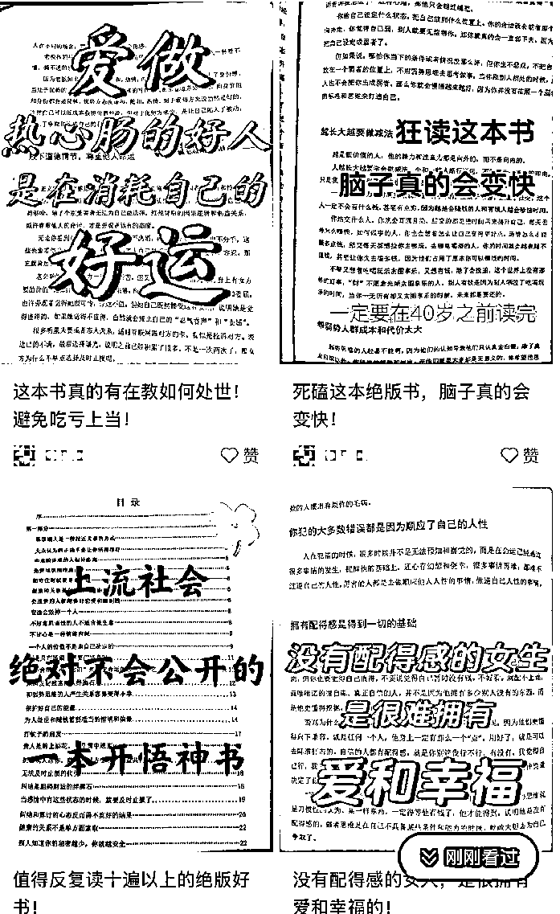
①大号在评论区引流到小号——粉丝在小号店铺里购买pdf，已售出605份。
②建群，引流到私域成交。
③粉丝私信，引流到私域成交。
那个号每天发5篇图文笔记，内容就是封面+内页图片，
陆续做出几个点赞过100的爆款笔记。最高点赞7000多，那篇笔记也被置顶了。
我仔细看她的爆款笔记，选的都是女性关心的话题：比如怎样消除黑眼圈? 恋爱阶段可以发生关系吗？西施沐浴秘术??
这些都是在其他平台的热门选题，放在小红书上依旧能爆
有人私信求资料，她就把人引到微信上，发一段设计好的话术：
“麻烦关注下我小红书，并在第一篇文章留言，然后私信我，联系方式我图片发给你，如果没看到图片就是被夹了，继续私信我说没看到图，谢谢大家啦。”
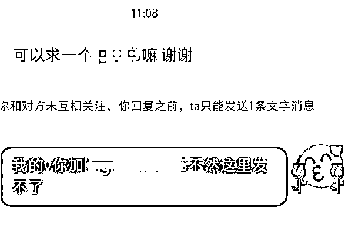
“将会持续分享xxx的内容
感谢大家的关注🙏受宠若惊中…..”
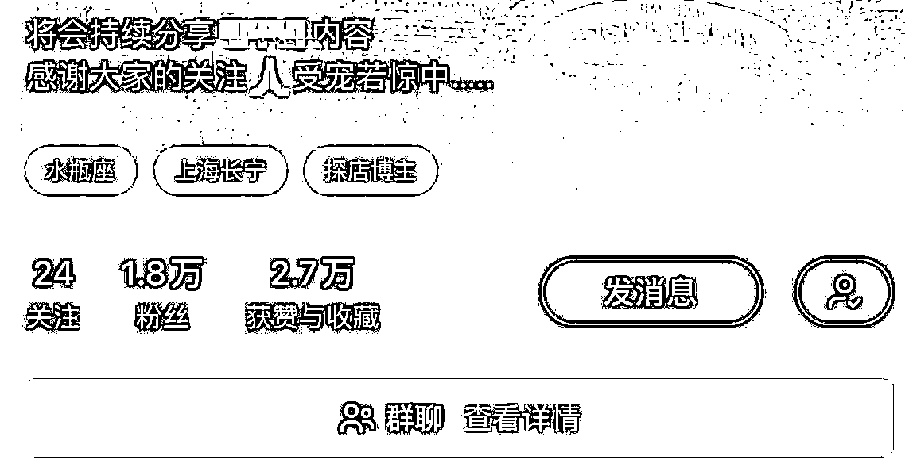
很简单，也挺真诚。
我将继续提供什么价值，以及表示感谢。
可以说，这个账号的爆红，是意料之外，也是情理之中
意料之外是账号没有做专业的包装，内容也没有提前规划；
情理之中是博主在笔记爆了之后，懂得承接流量变现。
看了她的爆款笔记，走了引流路径，接着看她开了店铺，想想我自己也能模仿做，赚钱拼手速，于是我当天就马上发笔记了
爆款笔记，拍了完整的目录，文字描述是：“完整目录来了，想看啥留言就行哈。”
一来，这是征求粉丝意见，
二来，粉丝帮她确定爆款选题
三来，增加互动。
后面这个笔记的点赞数超过了7000。
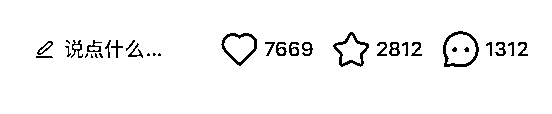
这个博主的账号，就是一个素人的感觉，这在小红书满平台精心包装的账号中，给人特别真实的感觉。
认认真真拆解后，我就马上模仿来做，同时思考哪个地方，我可以比她做得更好
我发她那一款资料是没有爆，发的是和她类似的资料，死磕了几天，拓展了其他SEO的关键词，接着就爆了1万的播放，点赞过千，引流182人，成交了54人
我参考她的定价涨价卖，后面1万多阅读的时候，系统提醒敏感，就没有继续推流了
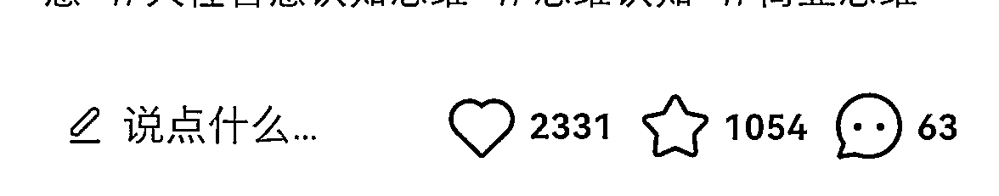
我刚开始没有想过有那么多评论和私信，就直接用大号回复了微信号，没有启动小号，后面回了半天，就喜提 “小红书禁止评论7天”，违规了
我当时挺后悔的，没有及时查询星球里面的注意事项，就开始引流了
遇到问题，解决问题，于是第一时间问了圈友，郑老师，就启动了小号，他建立我重点建立群聊引流，就没有浪费流量
小红书违规禁止评论7天，不给引流怎么办
有三个解决方法
第一个方法是，小红书笔记后面设置【投票】，引导进群聊
第二个方法是，互关粉丝，拉进群聊
第三个方法是，给粉丝语音留言，高价值的客户甚至可以打电话
只能手机设置 投票，成品的样子是这样显示的
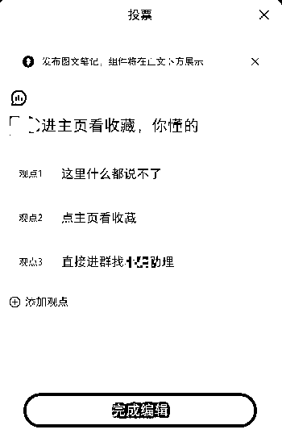
路径 :
小红书笔记的编辑页面——投票——投票组件——编辑文字即可
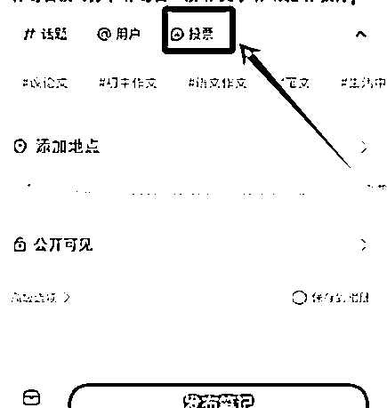
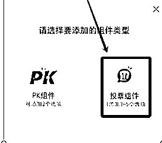
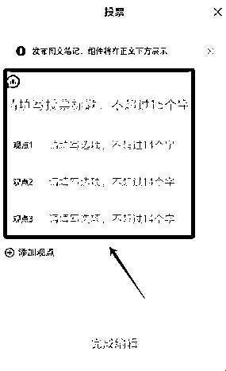
路径：小红书主页——找到右上角（发现群聊）——新建群聊——添加——选择互关好友，每次可以选20个人，多选几次
语音话术 就一句话
你好呀 小红书啊，什么都不让说，我那个地球号你懂的，请加 xxxx ，你懂得，我给你一个免费的xxx
你好 请加........阿拉伯数字 领取
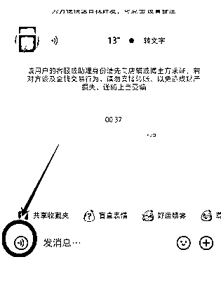
1、微信设置免通过，自动添加
2、经常被问到的问题，就记录下来，微信收藏夹，提高客服速度
3、打好标签
通过对方，微信做好备注，打上标签【小红书引流】
付款后，打上标签【xxx项目的成交】，方便后续群发消息
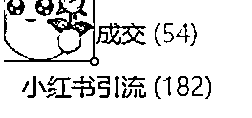
用户加到微信之后，我会用多种方法组合，让我的收益最大化。
首先来的人，都先送一份见面礼，礼多人不怪，伸手不打笑脸人嘛
不管他们买不买，都获得了好处，自然不会太为难我们啦
然后我会发一段话术+一个产品图，附上价格，给对方。
有意向的客户就会直接下单了，没有意向的人，他们就不回复的了
最后我采用的是朋友圈慢慢养熟，不打扰的成交法
有的客户犹豫两天，看朋友圈又会来下单
还有可以把价格分成两部分去写，售价是单品+打包价，这样可以加快成交
如果客户要优惠，我一般会同意，遇到议价就小小让步，破冰成交划得来。
来和姐妹们分享下，我是怎么让一个人原本只想在我这买一个品，最后成了买399元的产品的
这个女孩只是礼貌地问我39.9的品，能不能优惠点卖给她。我想了想，就直接说OK ，话术是
“加在朋友圈的老客户，我都是偏心的，当然可以啦，优惠5元”
“另外请多看我主页朋友圈，多逛逛店铺，有需要一起带走哟，一年会员399元更值哟，一周内都可以补差价”
后来这个女孩很高兴，觉得我人很豪爽，就下单了，我再另外送了她几份资料，她第五天就找我补了差价，付了399元的会员费
我觉得大家平时在卖东西的时候，遇到小刀的，不要生气，我们先答应对方，再提醒对方，可以看看别的品，可以一起打包带走。
这样有利于我们和这个客户产生更多的联系，长久来看，不会亏的。只要一来一往有沟通，关系就不会差的。
在网上做生意，热情待客是本分，哪怕在现实生活中是一个社恐 i人，在线上，我们也可以锻炼成一个e人，成为互联网亲人。
我们得照顾屏幕对面的人的感受，他们会清楚记得你和她们聊天的感觉，尽可能塑造愉悦的气氛，让客户高兴，否则你很难卖出去东西。
每天发布3条以上的朋友圈，分享有用的知识，工具等
发布完动态后，朋友圈点赞评论客户，混个脸熟肯定没错哈哈
记录客户的需求，备注好，主动为他们提供便利
如果准客户，在买单之前，问很多问题的，可能也会比较麻烦，尽量不要成交
小红书的客户素质都很高的，很少概率遇到要退款的人，我是这样沟通处理的
反正小红书已经下单了，那微信给她退，顺便就让她帮我提供数据价值
让她确认收货后，点个好评，我提供10个好评的话术让她挑着用
每次做一件事，都想着怎么做，对别人有好处，我们怎么在和气生财的情况下，利益最大化
我有一个原则：只要重复性超过3次的工作，都要建立SOP，或者找工具减轻工作量，不要重复发明轮子
只要是自己觉得做起来很痛苦的事情，前人也一定经历过，找他们问问，一定有人比自己聪明
这里给姐妹们分享一个工具，可以快速提高回复效率
1、如果是手机回复信息，可以把自己常用的话术添加进去搜狗输入法，羽毛的光标（是闪光语录)
比如小红书60个爆款标题、夸人的话术啦，售前等的话术，都添加进去，这样就可以不用苦思冥想了，回复快
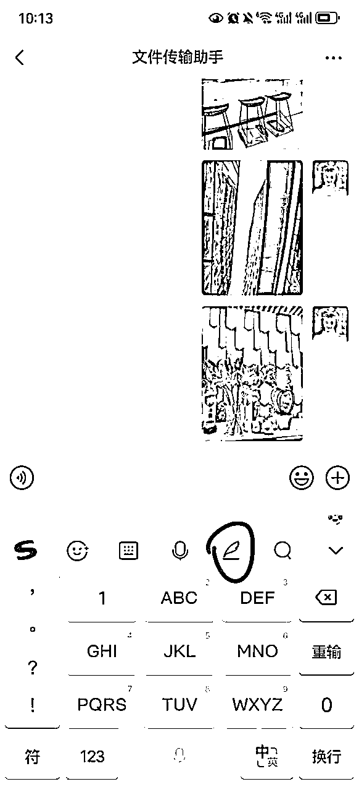
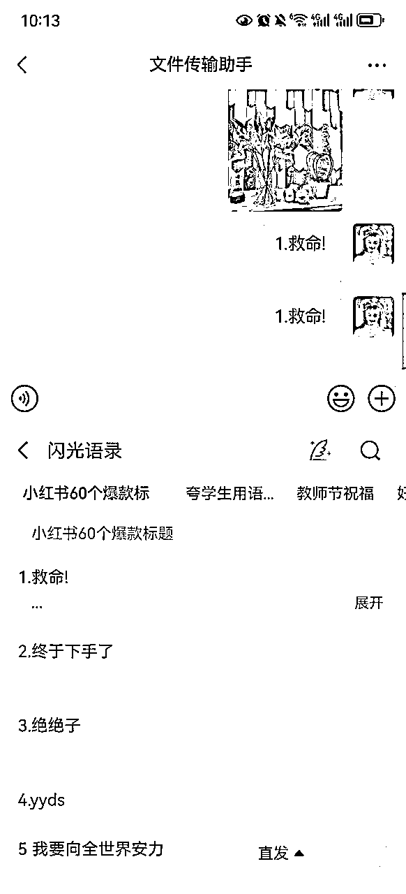
2、电脑的搜狗输入法【自定义短语】也很好用，输入字母就会弹出来常用的话术啦
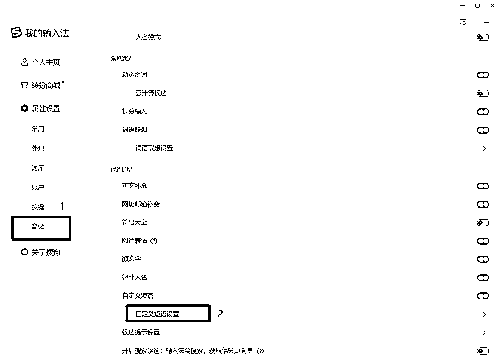
有朋友问我，是怎么把赚钱和长期主义成长结合起来的？
暂时结合不起来哈哈哈
我也想做个人IP啥的那些高大上的美丽账号，想想我还是个俗人，先变现 ，再调整
不要迷信花里胡哨，为爱发电不长久
刚开始是引流到私域变现，1万多阅读，每次打开都是99+，我就整整给小红书打了一天工，当一个没有感情的回信息机器人，干到我想罢工
当时就想着怎么解放双手，因为做客服和发资料的活，重复性太强了，一旦开始忙，就没空看手机，那些流量就白白浪费掉了
后面就开了小红书店铺，和引流相结合
这样组合下来，起码不会流失太多流量，很合适做副业的人使用
（副业就要做到低调，打造第二条小而美的收入曲线）
我跑通了小红书店铺的三个自动化，自动客服，自动发货，自动售后，
如果姐妹们遇到这些问题都可以问我，知无不言言无不尽。
每次打开小红书有进账，就很开心，那些繁琐重复的工作就交给自动化了
腾出时间来创作内容，只要你敢卖，就会有人买，设计好产品组合
流量永远不够，营销永远不会过度，只会不好
要想做得长久的话，还是和自己的职业挂钩，或者擅长的资料挂钩，会更得心应手
比如我把自己整理好的原创资料，申请了著作权版权证书，这样会更有权威，增加账号的可信度，客户下单也会更放心
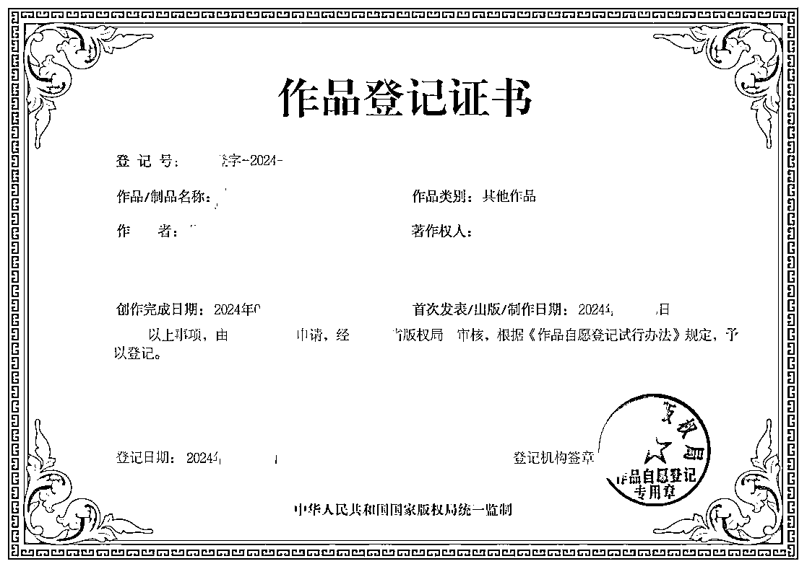
你看到的都是美好吗？并不是的，我不想用一些美化过的现实灼伤别人
搞钱路上只有相对的安全
有过日进斗金的狂喜，更多的是孤单、笔记没爆、爆了出单少、违规、封号......
有时还会直接断崖，没有推荐流量（有人知道怎么破吗）
普通人不要有轻松赚钱的念头
每次都觉得自己快要崩溃，差点支撑不下去了，硬撑一口气
每次都觉得自己是个fw，别人能赚到好多w，自己就是个零头
每次都在连轴转的间隙，累的两眼发黑，还是想坚持多一会
赚钱是个概率游戏
不怕犯错，不怕失败
做的越多错的越多，得到越多
感谢生财的圈友们无私分享，对我的启发很大，相比大佬们动辄几十万 、上百万的轻而易举的成交，我还是属于微不足道的成绩，我一定会努力的，2025年做到更好~
我的成长离不开生财伙伴们的支持，满怀感恩。
希望能够给和我一样的普通人，一些些帮助，
以上就是我的分享了，谢谢大家！
欢迎互相讨论，一起加油进步。